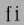
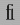

These differ between OpenType (originally called TrueType Open) and Apple (GX or Apple Advanced Typography). My support for both OpenType and Apple is incomplete.
GPOS,
GSUB and GDEF
opentype tablesGPOS, GSUB,
GDEF and BASE opentype tablesThe first two tables are used for positioning and substituting glyphs. The GPOS table can control things like: kerning, accent positioning, cursive joining, etc. The GSUB table can control things like: ligatures, arabic forms, vertical rotation, conversion to small caps, indic glyph rearrangement, etc. GDEF contains some rather esoteric glyph information, ligature carets, etc. BASE contains information on baseline placement and line heights.
This page assumes basic familiarity with the abilities of the tables, for more information on them read, study and inwardly digest the opentype docs on:
The basic idea of the GPOS and GSUB tables is that each script (or language within a script) has a set of "features" that are available to it. A feature in turn is associated with a lookup which contains data for the feature. An example of a script is 'latn' for latin, 'arab' for arabic, 'hani' for chinese ideographs. Two examples of features are 'kern' which provides kerning information between pairs of glyphs and 'init' which will transform one set of glyphs to another when those glyphs are at the beginning of a word.
FontForge does not support the full range of possibilities inherent in these tables.
GPOS
tableFontForge will read the following sub tables of the GPOS table:
| name | Reading support | Writing support | |
|---|---|---|---|
| 1 | single adjustment | This sub-table allows the font designer to change the metrics of a specific glyph. The feature tag will provide a context in which the change should occur. For instance the 'tnum' (tabular numbers) feature could change a proportionally spaced digit by adjusting its advance width to be some set value and then centering the digit (by adjusting the left side bearing) within the new width. | These can be created with the Element->Char Info->Position command. |
| 2 | pair adjustment | This sub-table allows the font designer to change the metrics of a specific pair of glyph. The most common use of this is for kerning where the advance width of the first glyph is altered depending on which glyph follows it. But the table is more general than that and could support mark (accent, vowel) positioning over a base glyph (though that is more efficiently done with the mark to base subtable). | 'kern' feature s may be created from the Metrics View. 'vkrn' with Metrics->VKern From HKern. |
| 3 | cursive attachment | This sub-table allows the font designer to force adjacent glyphs to join at specific points. It can be used to generate the slanted script style needed for Urdu. | Only the 'curs' feature is supported for this sub-table. These may be created with the Points->Add Anchor command |
| 4 | mark to base | This sub-table allows the font designer to specify how mark glyphs (accents, vowel signs, etc.) are positioned over base glyphs. Every glyph can have an attachment point and the mark's attachment point will be placed on the base's attachment point so the two join properly. See my example in the overview. | These may be created with the Points->Add Anchor command |
| 5 | mark to ligature | This sub-table is very similar to the previous one except that the base glyph is a ligature and may have several different points at which the same type of accent may be placed. | These may be created with the Points->Add Anchor command |
| 6 | mark to mark | This sub-table is very similar to the previous two except that the base glyph is itself a mark. This may be used when a glyph has two accents each of which would normally be placed at the same attachment point on a base glyph. The second accent will be place relative to the first accent rather than to the base glyph. | These may be created with the Points->Add Anchor command |
| 7 | contextual positioning | This sub-table allows the font designer to control the positioning of glyphs when they occur within a specific string (or class of strings). For instance this table could say "when you see a digit followed by the string "th" then raise the "th" into a superscript position" | These may be created with the Element->Font Info->Contextual command |
| 8 | chaining contextual positioning | This is a slightly more complex version of the above, it doesn't really add new capabilities, but it does provide a more logical approach to the issue. | These may be created with the Element->Font Info->Contextual command |
| 9 | extension positioning | This is used to allow for a GPOS table which is bigger than 64k. Its use should be quite invisible to the font designer | FontForge uses this sub-table when needed. |
| 10+ | reserved for future use | FontForge does not support these sub-tables yet. (nor does anyone) |
FontForge also has built into it knowledge on how to provide default values for some features that use these tables. See Element->Typo. Features->Default ATT command for that.
FontForge will retain the order of features in the GPOS table and when a font is generated the order should be the same as it was before.
GSUB
tableFontForge will read the following sub tables of the GSUB table:
| name | Reading support | Writing support | |
|---|---|---|---|
| 1 | single substitution | This sub-table allows the font designer to change from one glyph to another, with a context provided by the feature tag. For example many scripts have letters which have a different form at the end of a word than they do within (this is true of every letter in arabic, several in hebrew, lower case sigma in greek, and the long-s/short-s pair in renaissance latin). So the 'fina' feature would map the normal form into the final form, and the word processing program would do a lookup at the end of each word to see if a transformation was needed. | These can be created with the Element->Char Info->Substitution command. |
| 2 | multiple substitution | This sub-table allows the font designer to replace one glyph by a series of others. This is generally used for rather technical layout issues. | These can be created with the Element->Char Info->Multiple Substitution command. |
| 3 | alternate substitution | This sub-table allows the font designer to have a series of "alternates" for each glyph. One common example would be an italic font which had several swash variants for each capital letter. The word processing program would allow the user to choose which variant was appropriate | These can be created with the Element->Char Info->Alternate Substitution command. |
| 4 | ligature substitution | This sub-table allows the font designer to replace a string of glyphs with another glyph. A common example is a ligature where the string  is replaced by the  ligature. | These can be created with the Element->Char Info->Ligature command. |
| 5 | contextual substitution | This subtable allows for a string of glyphs to replace another string of glyphs (or class of strings of glyphs) | These may be created with the Element->Font Info->Contextual command |
| 6 | chaining contextual substitution | This is a slightly more complex version of the above, it doesn't really add new capabilities, but it does provide a more logical approach to the issue. | These may be created with the Element->Font Info->Contextual command |
| 7 | extension positioning | This is used to allow for a GSUB table which is bigger than 64k. Its use should be quite invisible to the font designer | FontForge uses this sub-table when needed. |
| 8 | reverse chaining contextual single substitution | This allows glyph substitutions to happen in reverse order, and it a variant of the chaining contextual subtable. | These may be created with the Element->Font Info->Contextual command |
| 9+ | reserved for future use | FontForge does not support these sub-tables yet. (nor does anyone) |
FontForge also has built into it knowledge on how to provide default values for some features that use these tables. See the [Populate] button of the various lookup subtable dialogs.
FontForge can produce some of these tables, but the text layout/word processing program used has to look up the tables and do the actual work of rearranging the glyphs.
FontForge will retain the order of features in the GSUB table, and the user may adjust it with the Element->Font Info command.
GDEF
tableFontForge will read ligature carets out of a GDEF table.
It will generate a GDEF table containing a glyph class definition sub-table (if needed) or a ligature caret sub-table (if needed).
As above I do not go deeply into the abilities of these tables, for more information see Apple's docs:
FontForge will currently read and produce (if Apple mode is set in font generation) the following tables:
| tag | name | Reading support | Writing support |
|---|---|---|---|
'bsln' |
baseline table | FontForge will read baseline data (except for Apple's ideographic centered baseline, for which there is no OpenType equivalent) | FontForge will produce this table if the user has specified baseline data which apple supports |
| tag | name | Reading support | Writing support |
|---|---|---|---|
'lcar' |
ligature caret table | FontForge will read ligature carets | FontForge will produce this table if the user has specified ligature carets |
'prop' |
glyph properties table | FontForge will read this table to figure out which glyphs are hebrew and arabic, and which have 'r2la' substitutions. | FontForge will generate this table if the font contains some right to left glyphs. |
| tag | name | Reading support | Writing support |
|---|---|---|---|
'kern' |
kerning table | FontForge will read horizontal/vertical kerning pairs and classes. FontForge can read contextual kerning information too into a state machine. | FontForge will produce this if the font contains kerning data -- kerning pairs, kerning by classes, and kerning by state machine. |
'opbd' |
Optical bounds table | FontForge will read optical bounds | FontForge will produce this table if the user has specified right and left bounds as simple positions ('lfbd' and 'rtbd'). |
FontForge has support for the 'mort' and
'morx' tables (Glyph
metamorphosis and extended glyph metamorphosis tables). These
correspond vaguely to the GSUB table. Note:
Any feature type/setting combinations which correspond directly
to an open type feature will be converted to the opentype tag
when read in. It will be converted back to a feature/setting
when an apple font is generated (use File->Preferences to extend FontForge's
mapping from feature type/setting to opentype tags).
| name | Reading support | Writing support | |
|---|---|---|---|
| 0 | Indic style rearrangement | FontForge can read these and stores them as state machines (which can be edited with Font Info) | Any indic state machines will be output in the generated font. |
| 1 | contextual glyph substitution | FontForge can read these and stores them as state machines (which can be edited with Font Info) |
If the font contains any state machines they will be
output here. If there are no state machines then the
following conversions of opentype features will be done:
|
| 2 | ligature substitution | FontForge can read the unconditional information from these and stores them as opentype ligatures (which can be edited with Font Info or Char Info). | If there are any ligatures with an apple feature/setting (or which have an opentype tag which can be converted to an apple feature/setting) then this table will be output. |
| 4 | non-contextual glyph substitution | FontForge can read these and stores them as opentype simple substitutions (which can be edited with Font Info or Char Info) | If there are any substitutions with an apple feature/setting (or which have an opentype tag which can be converted to an apple feature/setting) then this table will be output. |
| 5 | contextual glyph insertion | FontForge can read these and stores them as state machines (which can be edited with Font Info) | Any glyph insertion state machines will be output in the generated font. |
Some features have almost the same meaning in OpenType and AAT (although they are expressed quite differently), others are similar enough that they can sometimes be converted, and others have essentially no common ground.
| OT Table | AAT Table |
Description |
|---|---|---|
|
GDEF |
lcar |
The ligature caret information in both 'GDEF' and 'lcar' is essentially identical and FontForge has no trouble reading both and converting from one to the other. |
|
BASE |
bsln |
There is slightly different baseline data in the two formats. 'bsln' does not provide extent information. 'bsln' provides a baseline for every glyph, while 'BASE' provides a baseline for every script -- one hopes all glyphs in a script will have the same baseline, but it isn't guaranteed. Finally 'bsln' and 'BASE' provide a slightly different set of baseline tags, and FontForge only supports the OpenType ones. In particular Apple's ideographic centered baseline will be lost. |
|
GPOS |
kern |
In most cases kerning information can be converted from
one format to another. Both provide support for vertical
kerning and right to left kerning. Both provide support
for kerning by glyph pair and kerning by classes.
OpenType allows kerning commands to be supplied via a contextual chaining feature, Apple allows them to be controled by a state machine. FontForge supports both, but does not interconvert. |
|
GPOS |
opbd |
The GPOS features 'lfbd' and 'rtbd' provide the information needed to generate an Apple opbd table. If FontForge reads a font with an opbd table it will generate appropriate 'lfbd' and 'rtbd' features. If FontForge generates a font in apple mode that has these features it will create an opbd table. Similarly when FontForge reads an opbd table it will create 'lfbd' and 'rtbd' features. |
|
GPOS |
|
I am not aware of any way to convert other GPOS features to AAT. |
|
GSUB |
morx |
The 'mort' and 'morx' tables have the same capabilities ('mort' tables are an old format and Apple currently encourages that 'morx' tables be used instead). FontForge can read either one, but only generates 'morx' tables. Interconversion depends on specific feature types and the sub-table formats, see below |
|
GSUB |
mort |
OpenType uses a four character feature tag (like 'liga') while Apple uses two numbers to represent a feature setting (<1,2>). For FontForge to be able to inter-convert an OpenType feature into an Apple feature there must first be a correspondence between the two naming conventions. Sometimes there is an easy direct conversion (above 'liga' and <1,2> both represent "Common Ligatures") but far more often there is none. See below for a list of the tags and feature settings that FontForge considers similar enough to interconvert.
GSUB tables have 7 sub-table formats, while morx tables have 5.
| GSUB sub- table |
morx sub- table |
Description |
|---|---|---|
|
Single |
Non- |
These two sub-tables have almost exactly the same capabilities. Each allows one glyph to be substituted for another. The morx sub-table also allows a glyph to be deleted, while the GSUB sub-table does not. |
|
Multiple |
This GSUB subtable allows a single glyph to be replaced
by multiple glyphs. It has some similarities to Apple's
Glyph Insertion sub-table except:
|
|
|
Glyph |
This morx subtable allows a string of glyphs to be inserted before or after the current glyph (the current glyph always remains). This sub-table is contextual (ie. the insertion can be restricted to certain contexts). It bears some similarities to the GSUB Multiple subtable above. | |
| Alternate | This GSUB subtable allows a single glyph to be replaced by any one of several alternatives (presumably with help from a word processor's UI). An example of this would be a character which had several swash variants. There is nothing like this in the 'morx' table. | |
|
Ligature |
Ligature |
Both formats have ligature sub-tables. The 'GSUB' version
is unconditional (the ligature is always applied --
though a ligature substitution could be embedded in an
OpenType contextual substitution to make it condtional).
The 'morx' version can be contextual (though in fonts I
have examined it is usually uncontextual). FontForge only
supports unconditional ligatures.
FontForge can read all the unconditional ligatures from a 'morx' sub-table. FontForge loses all contextual ligatures. In OpenType, contextual ligatures can be built by wrapping a ligature sub-table inside a Context or Chaining Context subtable. |
|
Contextual |
This morx subtable allows single glyph substitutions to be applied within certain contexts. At first glance it seems that this could be converted into an opentype Context subtable, but this is rarely the case. | |
|
Context |
These GSUB subtables allow any collection of other substitutions to be applied contextually. At first glance one might think that these (with appropriate nested substitutions) might be converted to 'morx' contextual glyph substitutions, contextual ligatures, or even glyph insertion. Unfortunately this is rarely the case. | |
|
Chaining |
||
|
Reverse |
This GSUB subtable is applied backwards to the stream of glyphs, it allows a single glyph substitution per contextual match. There is nothing like it in 'morx'. | |
|
Indic |
This 'morx' subtable allows for several glyphs to interchange their positions in the glyph stream. There is nothing like it in GSUB (or GPOS for that matter). |
Sadly OpenType and AAT provide disjoint capabilities when it comes to contextual matching. AAT is more capable in some areas, OpenType more capable in others. FontForge is able to convert an OpenType contextual substitution into an AAT one if FontForge can detect that the OpenType substitution does not use capabilities beyond those of AAT. Currently this means:
| Rule | a | b | c | d | e | f |
|---|---|---|---|---|---|---|
| Rule | a | b | c | d | ||
| Rule | a | b | ||||
| Substitutions | A | B | C | D | E | F |
So the third rule will match an "ab" and convert them to "AB" (and this is valid because we have one internal and one final substitution and that's ok), then if that "ab" is followed by "cd" then rule 2 kicks in and will replace the "cd" with "CD" (again this has one internal and one final substitution, which is ok), and if that is followed by "ef" then they will be converted to "EF".
The following is not valid:
| Substitution | B | ||
|---|---|---|---|
| Rule | a | b | c |
|
|
|||
| Rule | a | b | |
| Substitution | A | ||
The two rules have substitutions at different places and that can't be expressed in an Apple state machine given that they have the same glyphs.
FontForge does not even try to convert an AAT contextual glyph substitution sub-table, too few of these can be expressed in OpenType to make it worth while.
NOTE: It would be possible to convert more lookups to state machines if FontForge were willing to:
FontForge will do neither of these.
There is a subtle bug involved in converting a chaining contextual substitution into an Apple contextual glyph substitution. AAT does not have the concept of a backtrack list, this means that substitutions may occur in a different order.
Well, obviously there are some thing that just aren't present. The concept of contextual positioning is missing from AAT, while Indic rearrangement is missing from OpenType. So let's concentrate on contextual substitutions, which both appear to support. The argument that follows is based on the capabilities of contextual matching, it applies equally to contextual ligatures, glyph insertion, glyph substitution and kerning, the examples given are only of glyph substitution because it is easier to represent (and because FontForge is only willing to convert contextual glyph substitutions) But even here, there is a very basic mismatch in concepts between the way OpenType and Apple specify contextual substitutions. Consider the following contextual substitution in a glyph list format:
| Initial Sequence | a | b | c | d |
|---|---|---|---|---|
|
Replace With |
B | C |
Now in OpenType this means if you find the sequence "abcd" then replace the "b" with "B" and the "c" with "C". But this can't be expressed in an Apple state machine. In OpenType the match is done first, and then the substitutions occur. In a state machine the substitutions have to be done (almost) concurrently with the match and so must happen whether the final "d" is present or not. (Note I'm using a glyph sequence because it is easier to display in an example. The same problem applies if the substitution is expressed by classes or by coverage tables)
Consider the following table with two glyph strings
| Initial Sequence | a |
b |
c |
d |
|---|---|---|---|---|
|
Replace With |
B |
|||
| Initial Sequence | a |
b |
c |
e |
|
Replace With |
C |
So replace the "b" if the final "d" is present, otherwise replace the "c". Again this cannot be expressed in Apple's state machines.
Finally consider
| Initial Sequence |
a |
b |
c |
d |
|---|---|---|---|---|
|
Replace With |
C | |||
| Initial Sequence |
b |
c |
e |
|
|
Replace With |
B |
|
If this substitution is given the sequence "abce" it cannot work in AAT. When it reads the "a" it will start down the "abcd" branch, the match will not fail until it looks for the "d" and finds "e" instead. At that point it is too late to switch to the "bce" substitution (which does match) because the "b" glyph will not have been marked as a substitution location.
Since Apple's glyph substitutions can delete glyphs a contextual glyph substitution table can create two character ligatures (one glyph is converted to the ligature and the other is deleted), while OpenType tables must use a ligature substitution to do this.
Finally an AAT state machine can match a general regular expression, while OpenType tables can only match fixed length strings. Suppose you were typesetting mathematics and wanted a substitution which would convert an arbitrary digit string following a variable into a subscript (so x23 should become x23). It is easy to write a state machine which will keep substituting as long as it gets more digits, but you'd need an infinite number of OpenType rules to have the same expressive power.
These examples probably seem fairly contrived, and (except for the swash one) they are. But they illustrate the point that the two formats have very different expressive capabilities and it is NOT possible to write a converter which will take any input in one format and produce an equivalent output in the other.
| Apple Feature Setting | OpenType Feature Name | OpenType Tag |
|---|---|---|
| Required Ligatures | Required Ligatures | rlig |
| Common Ligatures | Standard Ligatures | liga |
| Rare Ligatures | Discretionary | dlig |
| Fractions | Fractions | frac |
|
|
||
| Contextual Alternatives | Cursive connection | calt |
|
|
||
| Vertical Forms | Vertical Rotation 2 | vrt2 |
| Monospace numbers | Tabular numbers | tnum |
| Superscript | Superscript | sups |
| Subscript | Subscript | subs |
| Proportional Text | Proportional Widths | pwid |
| Half-width Text | Half Width | hwid |
| Full-width Text | Full Width | fwid |
| Traditional Characters | Traditional | trad |
| Simplified Characters | Simplified | smpl |
| JIS 1978 Characters | JIS 1978 Characters | jp78 |
| JIS 1983 Characters | JIS 1983 Characters | jp83 |
| JIS 1990 Characters | JIS 1990 Characters | jp90 |
FontForge will retain the order of features in the morx table, and the user may adjust it with the Element->Font Info command. (this is the same list as that used for GSUB table. GSUB features that don't correspond to mac features will be ignored).
FontForge does not (yet) support all the advanced typographic features available in either opentype or apple advanced typography.
See here for a complete list of supported tables.